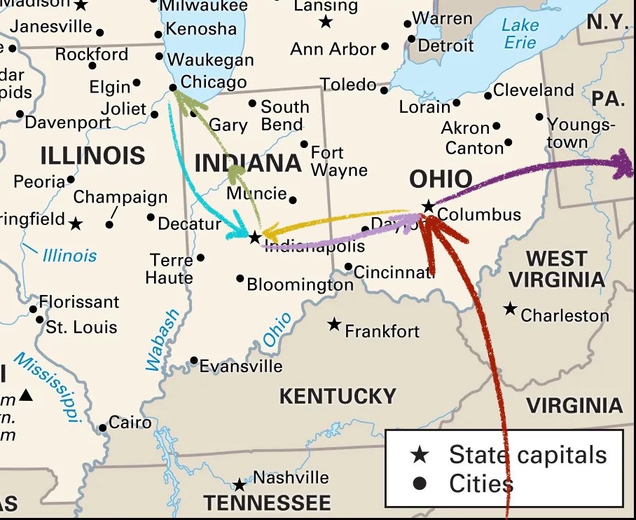

Culture Shock; and the Liminal Experience of Suburban America
A discussion of the Melancholy of Ohio
12/10/2024
On the 30th of August, 2024 - I was walking through Moon Township on the outskirts of Pittsburgh, PA, dissociating after 7 days of non-stop human interaction, something which I am simply not constructed to handle, no matter how good said interaction was. I was walking from a diner, walked for over a mile past several stores, food places, through both small and big perfectly mown lawns, and not once did I pass a single human person. Just cars.
It might seem odd to write an entire thesis about a country - but I wanted to just discuss some of my findings in a completely neutral space; exploring the culture shock of visiting America whilst mostly not talking about the politics. Obviously some of these specific things will be heavily influenced by the politics of America - but this won’t be any direct commentary on those political ideas, there are millions of articles about that.
This past trip spanned the end of August and the start of September and was my 3rd time ever visiting America. Once as a very small (around 4 year old) child visiting Florida, and once as a teen visiting New York. But this time, I traveled through multiple states, stayed with multiple friends, and visited cities of varying sizes; so culturally I feel like I caught a larger swath of how the general American lives.

The image above shows the route I took roughly - flying into Ohio, driving through to Indiana and eventually Chicago (although very little time was spent there), and then driving all the way back before concluding with just over a week in Pittsburgh, Pennsylvania.
When flying in, I had a layover in Orlando - and even just in those few hours in the airport, I immediately felt a cosmic shift… why is everything so huge? Which is such a well established feeling, right - everyone talks about how “everything's bigger in America.” Which I assumed referred to the food! The culture! I was expecting everything to be larger than life, especially compared to a tiny little depressed island.
But ultimately, it wasn't that everything felt bigger - simply that everything felt more empty. Huge city streets with very few people walking through. Huge grocery stores with aisles big enough to do cartwheels in and not even be noticed. Huge stretches of land divided by car and by corn, gatekeeping pockets of ideology and segmenting them into digestible cities surrounded by nothingness.
I have, for the most part, lived a pretty lonely life in the UK. I’ve spent a large portion of my adulthood isolated due to COVID, and as an introvert, it was hard for me to integrate and reintegrate myself for a long time. It’s not something that's worth pity-ing, it's something that I’m proud to have overcome and redefined my relationship with the public.
I guess, in part of being packed onto a tiny island, I am never really alone here. Even at my most isolated moments, I could still go for a walk and watch the lives of people from afar. Right now, I could sit on a bench in Princes Street and see thousands of people passing through the city, taking touristy photos at the most mundane buildings, telling stories that stretch millennia backwards and making plans that stretch millennia forwards.
So walking around downtown Pittsburgh with my best friend, on a gorgeous evening, through gorgeous rivers surrounded by gorgeous hillside views, and seeing more cars than people… felt oddly inhuman. That this huge open world playground had been beautifully, meticulously designed - yet left empty of interaction.
I've been trying to grasp with one of my main takeaways from the US being that it is… not real. More accurately, that the way I view the US is so fictionalised through the media I have spent my entire life consuming, that it is more tourist than truth.
Whilst driving from Indianapolis to Chicago, we drove through Logansport, IN to visit a heritage carousel (which was an amazing little venture by the way). Every house had huge lawns and driveways dedicated solely to them, and every street has three houses despite the fact the numbers went up to 4000 for some reason.
In my head, this is not a real place. This is the set of a horror movie, sitcom, or quirky RPG town. There's just enough space to move around in, with a small enough cast that they could all recur. There's no neighbouring, sprawling places to mark down. There's nowhere to run or hide, except ears upon ears of corn on either side.
When I first played Earthbound, I assumed that, much like… almost everything in Earthbound, that the design of its areas was an element of its parody. The houses with the big lawns and the tiny areas of suburbia was merely a limitation of the hardware and a discussion point about that white-picket-fence architecture of America. Not that it was actually just… like that.
I felt a similar feeling when I first visited New York City as a teen. New York is so fictionalised, especially in media - it's so unreal. You would turn the streets of Manhattan and see hundreds of tiny little street corners and diners As Seen On Every TV Show under the sun. In Pokémon Black and White, there's a huge city (Castelia City) based on Manhattan - I assumed that it’s buildings having 40+ floors (and only three floors of note) was an element of parody. Then when we landed in NYC, we got to our hotel and were staying on the 42nd floor.
It has become abundantly more clear to me that American design does not need parody or exaggeration. It really is bigger in America.
There's a few other points I want to ram in here, before closing all of this off:
When driving through Moon, PA - we passed a building labelled something along the lines of Moon Volunteer Fire Department, to which I laughed and said something along the lines of “how wonderfully dystopian,” before my friend explained that is simply normal in the US. More than 50% of firefighters in the US, across the entire country, are volunteers.
According to my brief research (and I may still be woefully uninformed about this), there are 266 volunteer firefighters in Scotland[1] . There are over 700 volunteer firefighters in Pittsburgh alone[2] . But I also learned that this is pretty common in other countries like France, and that these volunteers do get paid sometimes (unlike my initial, most dystopian thoughts). But I wanted to include this here, just because it was such a moment of culture shock.
Another moment of culture shock was on that same drive to Chicago. We drove out of my friend’s apartment… out of a tiny little cul-de-sac, and directly onto the motorway. (Or, uh… freeway?)
The more extreme culture shock from this drive though, was caused by us passing a graveyard directly on the side of the motorway. We wizzed by it in an instant, I’m not even sure how you would park there. My friend explained that it was for travellers who died whilst travelling, especially in the past before cars could connect us from Indianapolis to Chicago in a matter of hours rather than days.
He said it would be disrespectful to move the bodies of those already buried. I can't comprehend how it isn't disrespectful to build a high-speed motorway next to a known cemetery.
When driving into Chicago, we saw… maybe 20 consecutive billboards for injury lawyers? Obviously, this leans more into the political territory - but it is bizarre to me to see a world where the main industry that needs to be capitalised on in a billboard is human health and the protection of rights, rather than the latest Spiderman movie.
And all of these billboard strips had ridiculously long phone numbers - how are you gonna remember that whilst behind the wheel? Do they want you to take out your phone and type it in? Granted, I’ve always had this observation, even in the UK - where lorries would pass by with phone numbers plastered on the side, to order products you wouldn't even have time to comprehend before they'd passed you in a daze.
But to me, that felt like a mid-00s thing, and that once mobile phones became more normal, that kind of design faded out and the insane reality of “phone number at car speeds” had hit. But that design mentality felt well and truly present in the US, and generally the US felt stuck in a bygone era of graphic design (something which I do not have time nor qualification to diagnose right now).
There's this trope going around online of “the European mind cannot comprehend this” - with this referring to something about America, usually the travel time between neighbouring cities by car. And they are right. 100% correct. I don't think I could ever live in the US, because aside from the myriad of political reasons why - I don't think my mind could ever adjust to the sprawling liminal space that is the United States.
This may have all seemed very negative - but I want to conclude by talking about one (or two) last things. That even in all of this liminal reality that I observed, the US never hesitated to celebrate.
My visit overlapped with Labor Day, and I got to spend said day with my friend's family - and it was filled with such a sheer reverence for existing, for the people we love, for the history we share. Even if very little of it was about the holiday itself.
The UK is a deeply depressed place, that sinks further and further into dismay with every stomach churning headline that floats into our periphery. There is a huge culture of problem avoidance, and perpetuating cynicism that this life is not worth caring for. And they aren't wrong to think that at all.
But that attitude does not seep across the Atlantic, in spite of how deeply depressing the US is, at least from my observations. Everywhere I went in the US, I was surrounded by people celebrating - throwing parties over the most mundane things, experiencing that unabashed joy and pride that people in the UK only show in their most private moments. The Barbie shots, the singing in the car, the joy of existing and still surviving.
During my time in Moon, I went to a farmer's market, and I met a local author selling non-erotic Scottish romance novels she had written. Essentially Scottish fanfiction. She wasn't Scottish - but she told me all about how she’d travelled there and thought it was the most beautiful place in the world.
The average Scottish person probably does not think that Scotland is the most beautiful place in the world. We complain about the weather, the elevation, the buildings being saunas in the summer and the heating being too expensive in the winter. In the UK, we complain about the sticky surfaces in London, nickname our capital cities after the smell of shit, and bury it all in layers of cynicism.
When I was flying back into Scotland, I flew over sweeping mountains and intertwining coastlines. I flew over my home town, and spotted all of the squiggly unorganised streets and cosy, packed houses. I came home to an Edinburgh covered in haar, so thick you could barely see. After driving through flat roads of corn and dry heat for two weeks… I was glad to be back in the most beautiful place in the world. For the billionth time, but also for the first time.
[2] https://www.causeiq.com/directory/volunteer-fire-departments-list/pittsburgh-pa-metro/, for reference, PIttsburgh has about 330k population, less than Edinburgh.